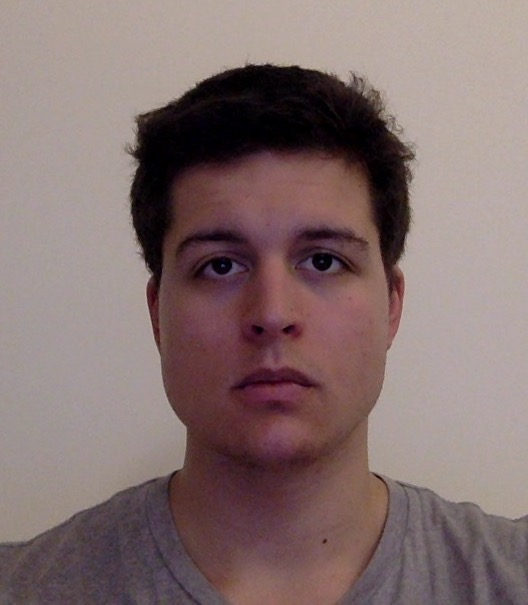

Cédric Gerbelot
|  | BrieflyI am a second-year PhD student at Ecole Normale Supérieure de Paris under the supervision of Florent Krzakala (EPFL, ENS) and Marc Lelarge (INRIA, ENS). I work at the interface between theoretical machine learning and mathematical physics. More precisely, I am interested in high-dimensional probability, optimization and mathematical methods inspired by spin glass theory. Here is a short CV. Contact
|
Publications and Preprints
Loureiro, B., Sicuro, G., Gerbelot, C.,Pacco, A., Krzakala, F, Zdeborova, L. Learning Gaussian Mixtures with Generalized Linear Models : Precise Asymptotics in High-dimensions, 2021, preprint.
[arXiv] [Show Abstract]Abstract: Generalised linear models for multi-class classification problems are one of the fundamental building blocks of modern machine learning tasks. In this manuscript, we characterise the learning of a mixture of Gaussians with generic means and covariances via empirical risk minimisation (ERM) with any convex loss and regularisation. In particular, we prove exact asymptotics characterising the ERM estimator in high-dimensions, extending several previous results about Gaussian mixture classification in the literature. We exemplify our result in two tasks of interest in statistical learning: a) classification for a mixture with sparse means, where we study the efficiency of
Gaussians with generic means and covariances via empirical risk minimisation (ERM) with any convex loss and regularisation. In particular, we prove exact asymptotics characterising the ERM estimator in high-dimensions, extending several previous results about Gaussian mixture classification in the literature. We exemplify our result in two tasks of interest in statistical learning: a) classification for a mixture with sparse means, where we study the efficiency of  penalty with respect to
penalty with respect to  ; b) max-margin multi-class classification, where we characterise the phase transition on the existence of the multi-class logistic maximum likelihood estimator for
; b) max-margin multi-class classification, where we characterise the phase transition on the existence of the multi-class logistic maximum likelihood estimator for  . Finally, we discuss how our theory can be applied beyond the scope of synthetic data, showing that in different cases Gaussian mixtures capture closely the learning curve of classification tasks in real data sets.
. Finally, we discuss how our theory can be applied beyond the scope of synthetic data, showing that in different cases Gaussian mixtures capture closely the learning curve of classification tasks in real data sets.
Loureiro, B., Gerbelot, C, Cui, H, Goldt, S, Mezard, M, Krzakala, F, Zdeborova, L. Capturing the learning curves of realistic data sets with a teacher-student model, 2021, preprint
[arXiv] [Show Abstract]Abstract: Teacher-student models provide a framework in which the typical-case performance of high-dimensional supervised learning can be described in closed form. The assumptions of Gaussian i.i.d. input data underlying the canonical teacher-student model may, however, be perceived as too restrictive to capture the behaviour of realistic data sets. In this paper, we introduce a Gaussian covariate generalisation of the model where the teacher and student can act on different spaces, generated with fixed, but generic feature maps. While still solvable in a closed form, this generalization is able to capture the learning curves for a broad range of realistic data sets, thus redeeming the potential of the teacher-student framework. Our contribution is then two-fold: First, we prove a rigorous formula for the asymptotic training loss and generalisation error. Second, we present a number of situations where the learning curve of the model captures the one of a emph{realisticdata set} learned with kernel regression and classification, with out-of-the-box feature maps such as random projections or scattering transforms, or with pre-learned ones - such as the features learned by training multi-layer neural networks. We discuss both the power and the limitations of the framework.
Gerbelot, C., Abbara, A., & Krzakala, F. Asymptotic Errors for Teacher-Student Convex Generalized Linear Models (or : How to Prove Kabashima's Replica Formula), 2020, preprint
[arXiv] [Show Abstract]Abstract: There has been a recent surge of interest in the study of asymptotic reconstruction performance in various cases of generalized linear estimation problems in the teacher-student setting, especially for the case of i.i.d standard normal matrices. Here, we go beyond these matrices, and prove an analytical formula for the reconstruction performance of convex generalized linear models with rotationally-invariant data matrices with arbitrary bounded spectrum, rigorously confirming a conjecture originally derived using the replica method from statistical physics. The formula includes many problems such as compressed sensing or sparse logistic classification. The proof is achieved by leveraging on message passing algorithms and the statistical properties of their iterates, allowing to characterize the asymptotic empirical distribution of the estimator. Our proof is crucially based on the construction of converging sequences of an oracle multi-layer vector approximate message passing algorithm, where the convergence analysis is done by checking the stability of an equivalent dynamical system. We illustrate our claim with numerical examples on mainstream learning methods such as sparse logistic regression and linear support vector classifiers, showing excellent agreement between moderate size simulation and the asymptotic prediction.
Gerbelot, C., Abbara, A., & Krzakala, F. Asymptotic errors for convex penalized linear regression beyond Gaussian matrices, Conference On Learning Theory (COLT) 2020. PMLR, vol 125,1682-1713
[arXiv, journal]arXiv] [Show Abstract]Abstract: blablabla
Ilton, M., Couchman, M. M., Gerbelot, C., Benzaquen, M., Fowler, P. D., Stone, H. A., … & Salez, T. Capillary leveling of freestanding liquid nanofilms, 2016, Physical review letters, 117(16), 167801.
[https:journals.aps.orgprlpdf10.1103PhysRevLett.117.167801 journal], arXiv] [Show Abstract]Abstract: We report on the capillary-driven levelling of a topographical perturbation at the surface of a free-standing liquid nanofilm. The width of a stepped surface profile is found to evolve as the square root of time. The hydrodynamic model is in excellent agreement with the experimental data. In addition to exhibiting an analogy with diffusive processes, this novel system serves as a precise nanoprobe for the rheology of liquids at interfaces in a configuration that avoids substrate effects.
Talks
Reviewing
Journal of Statistical Mechanics, Theory and Experiment (JSTAT)
IEEE Transactions on Information Theory
Advances in Neural Information Processing Systems (Neurips, 2021-)